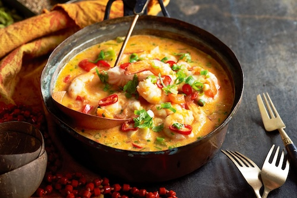

Home
Moqueca

Description
Moqueca is a rich, aromatic seafood stew featuring tender fish or shellfish cooked in a flavorful broth of coconut milk,
tomatoes, bell peppers, and onions. A key ingredient in the popular "moqueca baiana" version is red palm oil
(dendê oil) , which gives the stew a vibrant color and distinct flavor. It is often garnished with fresh
cilantro and served with rice or farofa (toasted cassava flour)
What you'll need
- 4 oz fillets of sea bass
- 4 tbsp lime juice
- 3 cloves garlic, crushed
- salt to taste
- 3 tbsp extra virgin olive oil
- 3 tbsp grated onion
- 3 tbsp palm oil
- 1 large onion, cut into rings
- 1½ cups water
- ½ (14 oz) can of coconut milk
- 1 green bell pepper, sliced
- 1 red bell papper, sliced
- 2 tomatoes, seeded and sliced
- 1 bunch chopped fresh cilantro
- ½ bunch green onions
Instructions
- Rinse sea bass under running cold water; pat dry. Place in a shallow dish and season with lime juice,
garlic, and salt. Marinate for 30 minutes.
- Heat olive oil in a large skillet over medium heat. Add grated onion and cook for a few seconds. Add fish
and marinade to the skillet and cook for 3 to 5 minutes. Stir in palm oil and onion rings, followed by water
and coconut milk. Simmer for 15 minutes. Add green bell pepper, red bell pepper, tomatoes, cilantro, and
green onions; cover and cook until vegetables are soft and flavors are well combined, about 5 minutes.